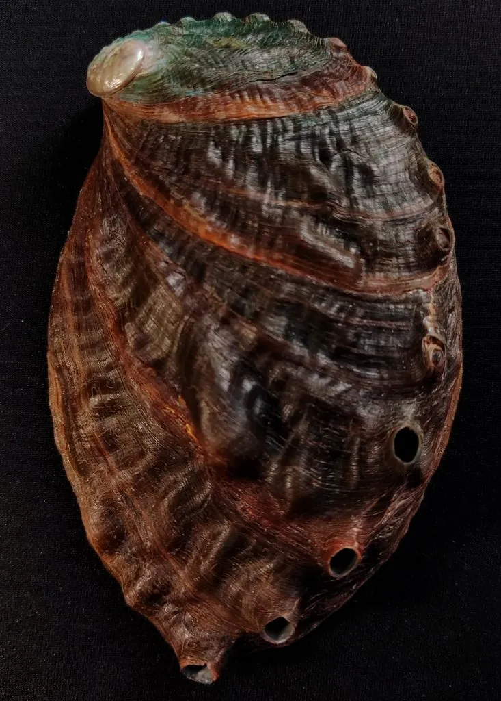

软体动物 · 动物界
皱纹盘鲍 Haliotis discus hannai

中国北方重要的养殖鲍鱼，壳面粗糙有皱纹、边缘有一排小孔，肉质肥厚鲜美，是海味“八珍”之一。
- 分类
- 门软体动物门纲腹足纲目原始腹足目科鲍科属鲍属
- 栖息环境
- 潮下带至水深 20 m 的岩礁，昼伏夜出，靠足部吸附在礁石上
- 地理分布
- 中国北部沿海、日本和朝鲜半岛的冷水海域，中国多地有养殖
- 保护级别
- 暂无评估；中国未列入国家重点保护野生动物名录（重要养殖贝类）
物种志
皱纹盘鲍的贝壳呈椭圆形、扁平如耳，壳面粗糙，呈绿褐或棕褐色，带有不规则的皱纹和生长纹。壳的左缘有一排小孔，用来排水和呼吸，这是鲍科动物的典型特征。它宽大肥厚的足部肌肉就是食用的“鲍鱼肉”，成体壳长一般 8–15 cm，最大可超过 20 cm。
皱纹盘鲍原产中国北部沿海、日本和朝鲜半岛，是冷水性海产贝类。它栖息于潮下带至水深 20 m 的岩礁，靠宽大的足部吸附在礁石上，昼伏夜出，夜间出来活动。皱纹盘鲍以藻类为食，用齿舌刮食岩石上的海带、裙带菜等藻类；繁殖期在秋季，雌雄异体，体外受精，幼体浮游后附着在礁石上。它是中国北方重要的海水养殖品种，20 世纪 70 年代起人工育苗和养殖技术逐步推广，如今已成为产量可观的养殖贝类。由于营养丰富、味道鲜美，鲍鱼被视为海味“八珍”之一。目前它没有IUCN 的正式评估，中国未将其列入国家重点保护野生动物名录。
形态与习性
- 食性以海带、裙带菜等藻类为食，用齿舌刮食
- 壳长一般 8–15 cm，最大可超过 20 cm
- 栖息深度潮下带至水深 20 m 的岩礁
- 繁殖秋季繁殖，雌雄异体，体外受精
- 养殖中国北方重要养殖品种，20 世纪 70 年代起推广人工育苗
- 食用部分宽大肥厚的足部肌肉，是海味“八珍”之一
趣味知识
- 皱纹盘鲍的壳边缘有一排小孔，用于排水和呼吸。
- 鲍鱼靠宽大的足部吸附在礁石上，吸力很强。
- 皱纹盘鲍是中国北方重要的养殖贝类，野生资源已经比较稀少。